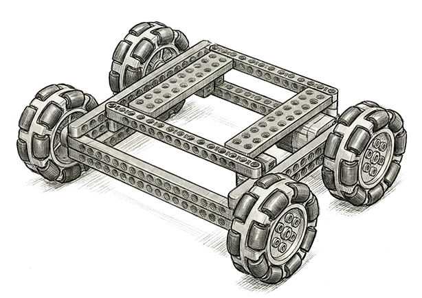
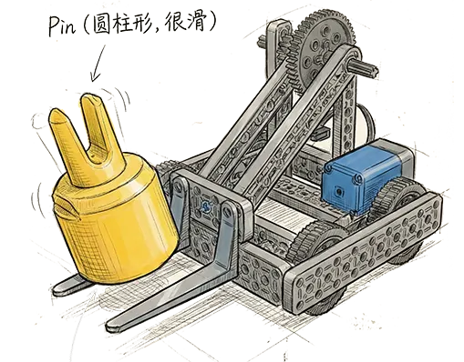
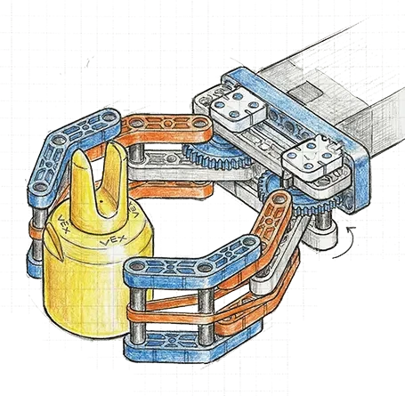

4.9 方案整合(3)
怎么开车？(Controls)
宋书玥设计了最顺手的按键方案：
左摇杆 + 右摇杆： 像开坦克一样，左手推左轮，右手推右轮。这样转弯最灵活！
L键 (L1/L2)： 控制手臂上下。左手食指控制，很方便。
R键 (R1/R2)： 控制爪子开合。右手食指控制。
F键： 控制手腕翻转。

86
任务： 画出一代车 (Gen 1) 的样子！
参与人： 全体队员
根据之前的规则分析，我们把机器人的工作列了个清单。这就像是给机器人找工作的“招聘启事”。
叶恒嘉： “这活儿也太多了吧！而且还要缩在那么小的尺寸里出发（<R5>），太难了！”
叶恒瑞： “别急，我们把这些任务拆开，一个一个想办法。”
我们遇到了第一个大难题：电机不够用！
规则 <R11> 说最多只能用 6 个智能电机。
宋书玥：“我还想给底盘装 4 个电机呢，那样推力大，速度快。”
印涵邸：“不行不行，那就没电机做手臂了！我们是去得分的，不是去开赛车的。”
最终决定： 省着点花！底盘只用 2 个电机。把剩下的资源留给那些复杂的动作。
虽然决定了用 2 个电机做底盘，但是用什么轮子呢？
样子： 使用普通轮子，前面两个，后面两个。
优点： 结构简单，足够结实！
缺点： 转弯的时候摩擦力大，可能会卡顿。
样子： 用特殊的 Omni 轮（全向轮）。
优点： 转弯顺滑！
大家觉得方案B不错！既省电机，又灵活。
宋书玥： “我要跑得比风还快！这样才能抢在对手前面把 Pin 都捡走。”
叶恒嘉： “那我们用大齿轮带小齿轮，做个加速装置吧！”
虽然叶恒瑞担心太快了会控制不住，但大家都想试一试“极速飞车”的感觉。就这么定了！
Pin 是圆柱形的，表面很滑，这是最头疼的问题。
原理： 像叉车一样，直接插到 Pin 底部的缝隙里。
缺点： 铲起来不容易；铲起来之后，如果不小心一晃，Pin 就会掉下来；而且没法把 Pin 翻转过来。
大家评价： 太简陋了，Pass！
原理： 像螃蟹钳子一样，或者像人的两根手指，把 Pin 夹住。
优点：
1. 抓得紧。
2. 可以保持 Pin 是直立的，方便堆叠。
3. 可以在爪子上装旋转轴，实现翻转。
虽然一次只能抓一个，比较慢，但是我们要的是准确度！只有抓稳了才能堆高高。
虽然决定做夹爪，但我们试了一下，塑料爪子抓塑料 Pin，还是太滑了！稍微一抖就掉了。
叶恒嘉： “我有办法！给爪子戴上‘手套’！”
他找来了 VEX 的橡胶皮筋，缠在爪子的内侧。哇！效果立竿见影！
我们要把 Pin 举起来，挂到高塔上，或者叠在别的 Pin 上面。
原理： 用四根梁组成一个平行四边形。
优点：
1. 举起来的过程中，爪子始终保持水平，不会把 Pin 倒出来。
2. 结构简单，这也是 VEX 这里的经典结构。
缺点：
1. 不够直： 它是画着弧线往上举的，不是直直向上，挂 Pin 的时候很难对准。
2. 举不高： 因为机器人开始时必须缩成一团（有尺寸限制），手臂不能做得太长，所以够不到太高的地方。
3. 容易翻： 手臂伸出去太远，机器人很容易向前“栽跟头”。
原理： 两个四连杆叠罗汉！
优点： 能举得超级高！而且是直上直下的。
缺点： 太重了！太复杂了！我们怕做出来车头太重，一刹车就翻跟头。
原理： 像电梯一样。
优点：
1. 直直的，好瞄准。
2. 很稳，不栽跟头。
缺点： 需要专门的链条导轨，摩擦力大，容易卡住。
| 比什么？ | 四连杆 | 双反四连杆 | 链条电梯 |
|---|---|---|---|
| 高度 | 3 (一般) | 5 (超高) | 4 |
| 稳定性 | 2 (容易翻) | 2 (晃) | 5 (很稳) |
| 轻便 | 5 (轻) | 2 (重) | 4 |
| 搭建难度 | 5 (简单) | 2 (难) | 3 |
| 总分 | 15 | 11 | 16 (胜出) |
最终选择： 经过一番激烈讨论，我们决定采用 链条升降 方案！
叶恒瑞： “虽然链条升降的结构稍微复杂一点，但它直上直下的特性，能让我们在堆叠 Pin 和挂 Beam 时实现更精准的对位。而且，重心稳定，不容易翻车，这对于我们冲刺高分至关重要！”
大家一致认为，为了比赛的精准度和稳定性，值得投入更多的搭建精力。
Beam 很重（170克），再加上爪子，一个电机举不起来怎么办？
还记得第三章我们讨论过的机械魔法吗？借助能让减速齿轮带来的力量放大和橡皮筋提供的“重力补偿”，就可以轻松解决。
Beam 那么长，那么重，如果用前面的爪子抓，车头会很重，容易翻车。而且爪子很难对准 Beam 的重心。
想法： 在车屁股后面装个钩子。倒车，钩住 Beam，然后拖着走。
优点： 不用电机！结构超级简单。
缺点： 只能在地上拖，没法举起来。
想法： 让前面的爪子能翻转到底下，把 Beam 铲起来。
缺点： 太复杂了，而且我们没有多余的电机做这个翻转动作了。
叶恒嘉： “我们一代车先别想那么多了，先把 Beam 拖到得分区就能拿 10 分，这已经很好了！”
决定： 先做简单的后置拖钩。
虽然简单，但也要设计好。
1. 高度： 钩子不能太低，不然会蹭到地上的减速带。也不能太高，不然钩不住 Beam。
2. 形状： 要做成“V”形，这样 Beam 会自动滑到钩子中间，不会在半路上掉下来。
为了拿颜色匹配分，我们需要把 Pin 翻过来。比如红 Pin 倒了，我们得把它正过来才能插进红 Goal。
所以，我们在爪子后面加了一个电机，让爪子可以旋转 180 度。
功能：
1. 抓取时：爪子朝下。
2. 翻转时：爪子朝上。
3. 释放时：爪子朝前。
经过好几天的讨论和画图，我们终于把所有想法拼在了一起！
叶恒瑞说，为了方便写程序，我们要先把电机插在哪里规定好。
| 端口 | 是谁？ | 作用 |
|---|---|---|
| 1 | 左轮 | 跑跑跑 |
| 6 | 右轮 | 跑跑跑 |
| 4 | 手臂 (Lift) | 举高高 |
| 10 | 爪子 (Claw) | 抓紧紧 |
| 11 | 手腕 (Wrist) | 翻跟头 |
| 2 | 陀螺仪 | 指南针 |
宋书玥设计了最顺手的按键方案：
左摇杆 + 右摇杆： 像开坦克一样，左手推左轮，右手推右轮。这样转弯最灵活！
L键 (L1/L2)： 控制手臂上下。左手食指控制，很方便。
R键 (R1/R2)： 控制爪子开合。右手食指控制。
F键： 控制手腕翻转。
我们要去零件库找这些东西：
第一周： 叶恒嘉负责搭底盘。一定要结实，不能跑着跑着散架了。
第二周： 搭手臂和爪子。要不断调试橡皮筋的数量，直到它能悬停。
第三周： 合体！把上面装到底盘上，理线（叶恒瑞说线乱糟糟的像鸟窝，必须理好）。
我们想了一些可能会发生的倒霉事：
1. 车太快了控制不住：
对策：叶恒瑞说可以在程序里把速度调慢一点。
2. 举太高翻车：
对策：在车屁股后面加个“防倾覆轮”（像个小尾巴），顶在地上就不会翻了。
3. Pin 抓不住：
对策：多缠几圈皮筋！
为了证明我们不是瞎选的，我们要记录下被淘汰的方案。
再见，滚筒吸入： 虽然你很快，但是你太大了，而且没法精准堆叠。
再见，H型底盘： 虽然你能横着走，但是你太费电机了。
再见，双反四连杆： 虽然你能举很高，但是你太重了，我们的小车扛不住。
这章我们动了很多脑筋，画了好多草图，还吵了好几架。不过最后我们达成了一致。
一代车看起来可能有点简单，甚至有点简陋，但它是我们大家智慧的结晶。
下一章，我们就要拿起螺丝刀，把它从纸上变出来了！好期待啊！